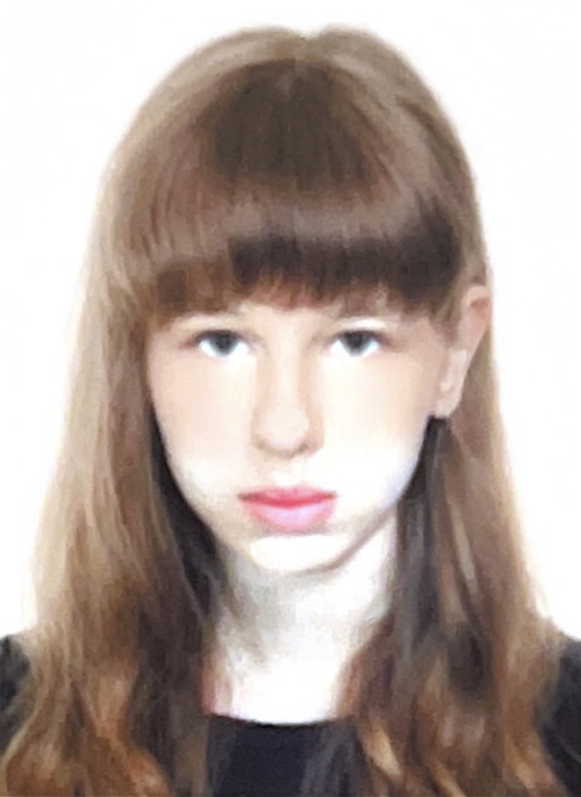

Звіти лабораторних робіт
З дисципліни "Інтернет-технології та проєктування WEB-застосувань"
Студентки групи ІС-33 Каленіченко Варвари
| Лабораторна Робота №1 |
Лабораторна Робота №2 |
Лабораторна Робота №3 |
Лабораторна Робота №4 |
Лабораторна Робота №5 |
Лабораторна Робота №6 |
Лабораторна Робота №7 |
Лабораторна Робота №8 |
Лабораторна Робота №9 |
| Опис предметного середовища |
ТемаСайт JellyEtude, присвячений медузам, їх різноманітності, екологічній ролі, цікавим фактам, фотогалереям та статистичним даним. МетаНадати комплексний огляд медуз, підвищити обізнаність про їх важливість у морських екосистемах, зацікавити користувачів через цікаві факти та візуальний контент, а також служити ресурсом для глибшого вивчення цих морських істот. Що ви знайдете на JellyEtude:
JellyEtude — це ваш віртуальний гід у світі медуз, що дозволяє вам пізнавати і захоплюватись цими надзвичайними створіннями, що живуть в океанах нашої планети. Скріншот макету головної сторінки
|
| Тема. Мета. Місце розташування ЛР №1 |
|
| Структура документа | |
| HTML-код таблиці | |
| HTML-код форми | |
| HTML-код списку | |
| HTML-код зображення | |
| Висновки |